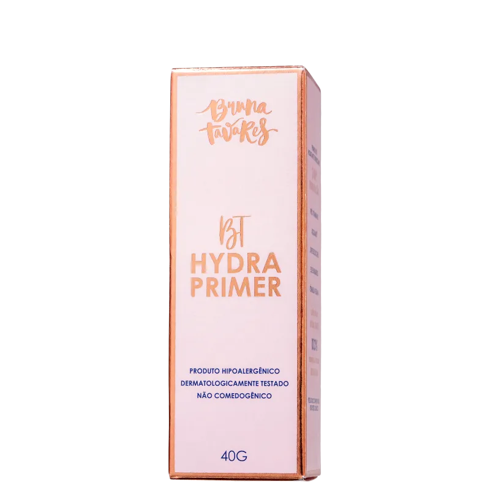
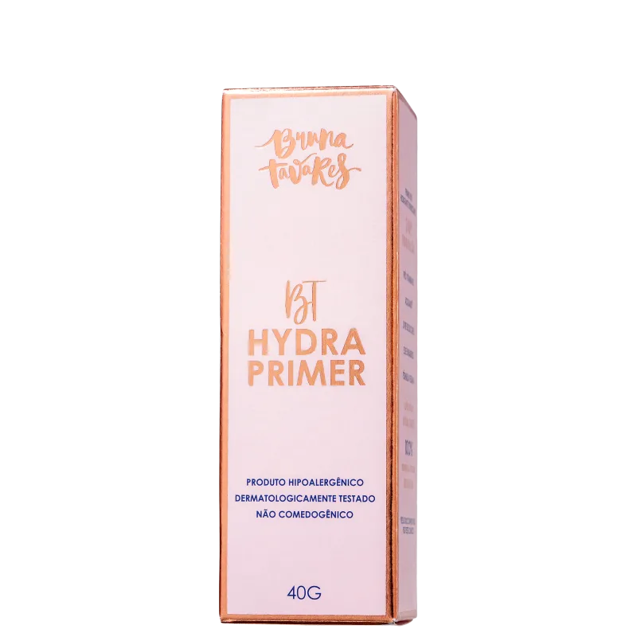

Bt Hydra Primer - BRUNA TAVARES
De R$ 102,99
Por: R$ 82,90
Informaçoes Do Produto
Descrição Primer Facial Bruna Tavares Hydra 40g Um creme que possui textura leve, hidratante e refrescante. Trata-se de um primer livre de silicones focado em potencializar a durabilidade da maquiagem enquanto trata a pele. Possui ativos que restauram a barreira cutânea, estimulando a renovação celular e a produção natural de colágeno, elastina e ácido hialurônico. Aplique uma quantidade pequena do primer no centro do rosto e espalhe com os dedos para as extremidades. Utilize sozinho na sua rotina de skincare ou antes de sua base.